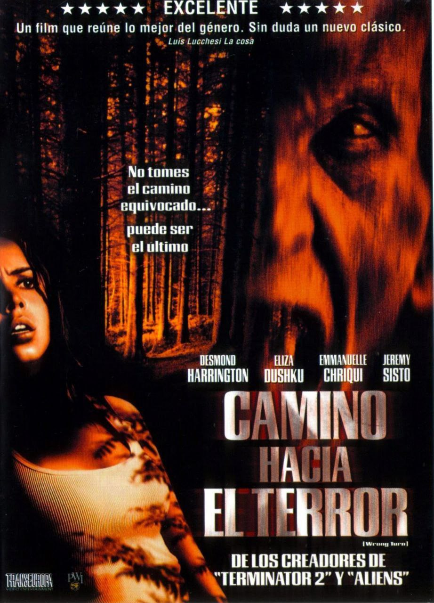

Camino hacia el terror 1
Película: Camino Hacia el Terror 1
Año: 2003
Género: Terror, Slasher y Gore
Sinopsis:
Seis adolescentes viajan en coche cuando, de pronto, deben desviarse de su ruta al encontrar la carretera bloqueada por un accidente. Pero los jóvenes se pierden en los densos bosques de West Virginia, donde serán perseguidos por una raza humana de caníbales, horriblemente desfigurados por su antinatural alimentación a lo largo de generaciones...

Camino hacia el terror 2
Película: Camino Hacia el Terror 2
Año: 2007
Género: Terror, Slasher y Gore
Sinopsis:
Dale Murphy es el presentador de The Apocalypse, un reality-show en el que los participantes son aislados en un remoto paraje y obligados a sobrevivir por sus propios medios. Lejos están de imaginar que el bosque donde acaban de instalarse es el hogar de un grupo de mutantes caníbales y que el juego no va a tardar en convertirse en terrorífica realidad. Secuela de KM. 666 (Wrong Turn), rodada en apenas 25 días y lanzada directamente al mercado del DVD.

Camio hacia el terror 3
Película: Camino Hacia el Terror 3
Año: 2009
Género: Terror, Slasher y Gorev +
Sinopsis:
Fonda y sus amigos van al bosque a pasar unos días. Sus amigos son víctimas del mutante asesino, Tres Dedos, convirtiéndose en su alimento. Mientras tanto algunos prisioneros peligrosos están siendo transferidos por Nate Wilson, un guardián de la prisión, que va a retirarse para convertirse en abogado. Durante el transporte su camión es atacado por Tres Dedos. Por lo que los prisioneros se fugan. Mientras huyen por los bosques, los prisioneros encuentran por casualidad un camión abandonado lleno de bolsas del dinero. Uno por uno Tres Dedos acaba con todos los prisioneros... Tercera y última entrega de la trilogía Km 666, lanzada (como la segunda parte) directa en DVD y Blu-Ray.

Camino hacia el terror 4
Película: Camino Hacia el Terror 4: INICIO SANGRIENTO.
Año: 2011
Género: Terror, Slasher y Gore
Sinopsis:
Un grupo de estudiantes universitarios se extravían mientras esquían en la nieve debido a una tormenta, viéndose forzados a refugiarse en un misterioso hospital abandonado, lo que ignoran es que allí habitan tres monstruosos caníbales. Precuela de la original "Wrong Turn" (Km. 666 - Desvío al infierno) del 2003.

Camino hacia el terror 5
Película: Camino Hacia el Terror 5: CAMINO SANGRIENTO.
Año: 2012
Género: Terror, Slasher y Gore
Sinopsis:
En una pequeña ciudad de Virginia Occidental, tiene lugar el Mountain Man Festival el día de Halloween, donde una multitud de excursionistas acuden a la fiesta, disfrazados y listos para pasar una noche salvaje con música y diversión. Pero una familia endogámica de caníbales les aguará la fiesta. Quinta entrega de la saga KM 666.

Camino hacia el teror 6
Película: Camino Hacia el Terror 6: HERENCIA DE MUERTE
Año: 2014
Género: Terror, Slasher y Gore
Sinopsis:
Una repentina herencia lleva a Danny y sus amigos a "Hobb Springs", un inmenso hotel en lo profundo de las colinas de Virginia. El mismo que está a cargo de dos misteriosos e inquietantes parientes suyos : Jackson y Sally, quienes insisten en presentar a Danny a sus demás ocultos familiares... pronto él se verá obligado a elegir entre estos o sus amigos.